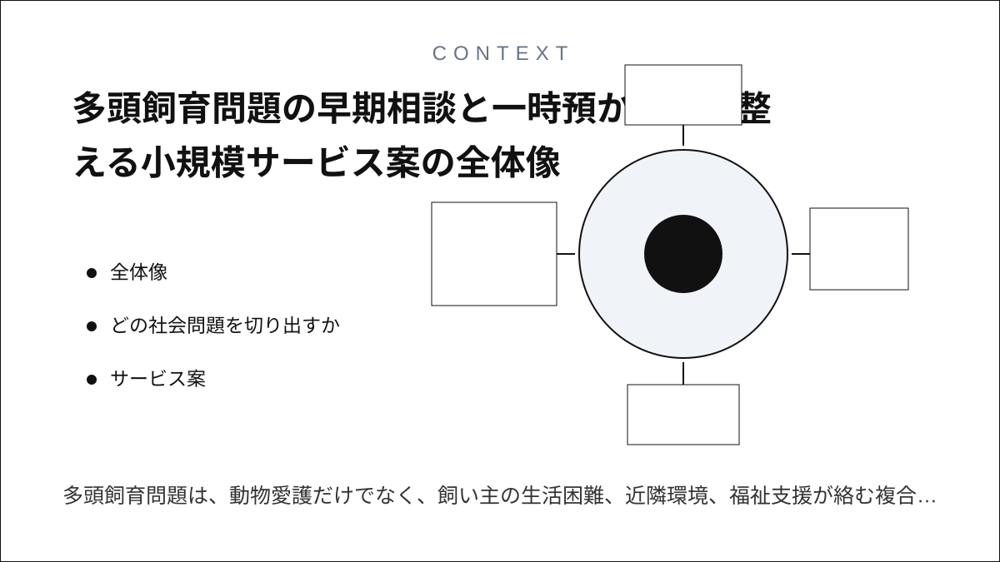
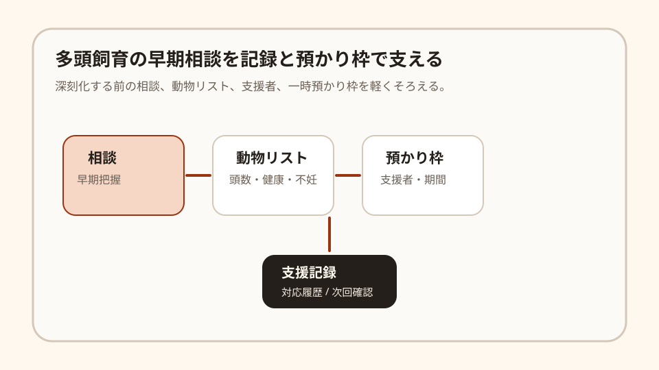
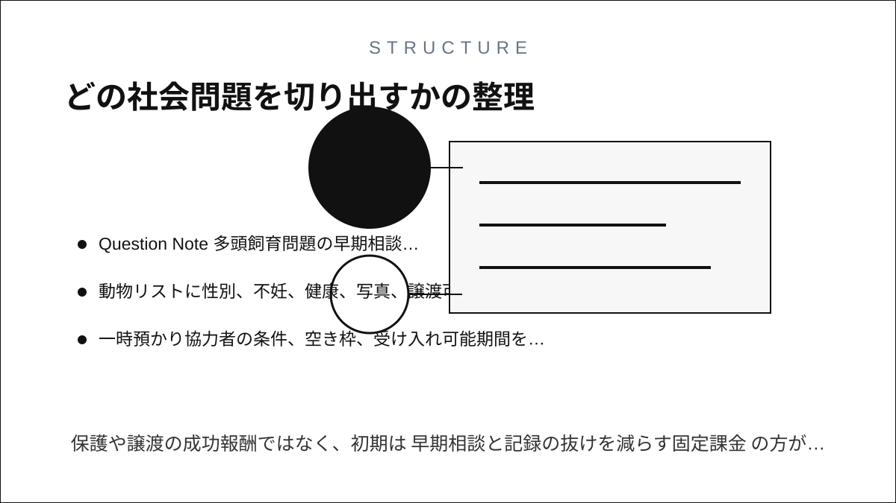
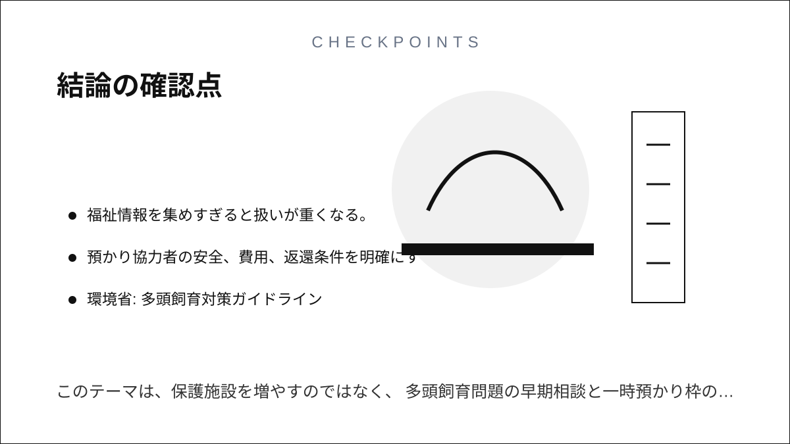

Question Note
多頭飼育問題の早期相談と一時預かり枠を整える小規模サービス案


全体像
多頭飼育問題は、動物愛護だけでなく、飼い主の生活困難、近隣環境、福祉支援が絡む複合的な課題です。環境省のガイドラインも、社会福祉と動物愛護管理の多機関連携を前提にしています。課題は保護数を増やすことだけではなく、早期相談、頭数把握、健康状態、一時預かり枠、対応履歴が別々になることです。

狙いは、大規模な保護シェルターを作ることではなく、自治体、動物愛護団体、福祉関係者の早期相談と一時預かり調整に絞ることです。
どの社会問題を切り出すか
| 現場課題 | 何が起きるか | 既存手段の限界 |
|---|---|---|
| 相談が深刻化後に来る | 頭数、繁殖、臭気、近隣苦情が大きくなってから対応になる。 | 電話相談だけでは、初期兆候と次回確認日が残りにくい。 |
| 動物リストが更新されない | 頭数、性別、不妊状況、健康状態、譲渡可否が変わる。 | 紙や写真だけでは、支援者間で最新版を共有しにくい。 |
| 一時預かり枠が見えない | 急に保護が必要になっても、誰が何頭を何日預かれるか分からない。 | チャットでは、預かり条件、期間、返還履歴が流れてしまう。 |
サービス案
多頭飼育の早期相談向けに、相談記録、動物リスト、一時預かり枠、次回確認日をまとめる「多頭飼育早期支援ミニ台帳」を提供します。
- 相談ごとに頭数、動物種、緊急度、次回確認日を残す。
- 動物リストに性別、不妊、健康、写真、譲渡可否を登録する。
- 一時預かり協力者の条件、空き枠、受け入れ可能期間を管理する。
- 自治体、福祉、動物愛護団体で共有する情報範囲を分ける。
- 月次で相談件数、対応中、預かり中、未確認をCSV化する。
100万円規模に抑えた市場設定
初年度は2市程度の動物愛護団体、自治体窓口、福祉連携先50拠点を到達可能市場とし、16拠点に導入する前提にします。
| 項目 | 仮定 | 結果 |
|---|---|---|
| 到達可能拠点数 | 50拠点 | 地域団体と自治体窓口経由で接点を持てる範囲 |
| 初年度導入 | 16拠点 | 動物愛護団体と連携窓口を中心に導入 |
| 月額利用料 | 5,000円/拠点 | 960,000円/年 |
| 導入支援 | 10,000円 x 6拠点 | 60,000円 |
| 初年度売上予想 | 合計 | 1,020,000円 |
収益モデル
- 基本: 団体または連携拠点ごとの月額利用料
- 追加: 初期動物リスト作成、預かり条件テンプレート作成
- 追加: 自治体・団体向けの連携説明会
保護や譲渡の成功報酬ではなく、初期は早期相談と記録の抜けを減らす固定課金の方が読みやすいです。
必要なシステム要件と支出
| 領域 | 要件・使い道 | 年額の目安 |
|---|---|---|
| フロント | スマホで相談、動物リスト、預かり枠を更新できる画面 | 0円〜 |
| バックエンド | 相談、動物、預かり協力者、支援履歴、権限の管理 | 42,000円 |
| 通知 | 次回確認日、預かり期限、未対応リマインド | 18,000円 |
| 帳票・記録 | 相談CSV、動物リストPDF、対応履歴 | 18,000円 |
| 運用・専門確認 | ドメイン、バックアップ、個人情報・福祉連携時の共有範囲確認 | 82,000円 |
| 年間支出 | 合計 | 160,000円 |
AIを使った開発見積もり
AIを使うと、相談票、動物リスト、預かり枠、月次CSVの初期実装を短縮できます。ただし、福祉情報と動物情報をどこまで共有するか、緊急対応の責任範囲は人が決める必要があります。
| 作業 | AIで短縮できること | 目安 |
|---|---|---|
| 要件整理 | ガイドラインと現場ヒアリングから台帳項目を整理 | 4〜6日 |
| プロトタイプ | 相談票、動物リスト、預かり枠の画面を作る | 1〜2週間 |
| 本実装 | 権限、通知、CSV、PDF、写真管理を補助 | 2〜3週間 |
| 検証・修正 | 架空ケースで情報共有範囲と履歴を確認 | 1週間 |
売上・支出・利益
売上 - 支出 = 利益
| 項目 | 金額 | 補足 |
|---|---|---|
| 売上 | 1,020,000円 | 月額5,000円 x 16拠点 x 12か月 + 導入支援60,000円 |
| 支出 | 160,000円 | システム、通知、写真保存、帳票、専門確認 |
| 利益 | 860,000円 | 支援者調整の作業時間は別途 |
必要人数と人材要件
この規模では、実行者1名 + 単発外注を前提にします。
- 実行者: Webアプリを作れ、動物愛護団体と福祉関係者の間を整理できる人
- 補助外注: 個人情報、動物取扱、自治体連携文書の確認
- 望ましいスキル: CRUD実装、写真台帳、権限設計、相談業務整理、多機関連携への理解
リスクと最初の検証
- 深刻案件をサービスだけで抱え込まない責任分界が必要。
- 福祉情報を集めすぎると扱いが重くなる。
- 預かり協力者の安全、費用、返還条件を明確にする必要がある。
最初は2団体で相談10件分だけ試し、頭数把握、次回確認、預かり候補の見落としが減るかを見ます。
結論
このテーマは、保護施設を増やすのではなく、多頭飼育問題の早期相談と一時預かり枠のずれを整える方向に切ると、100万円規模でも成立しやすいです。
